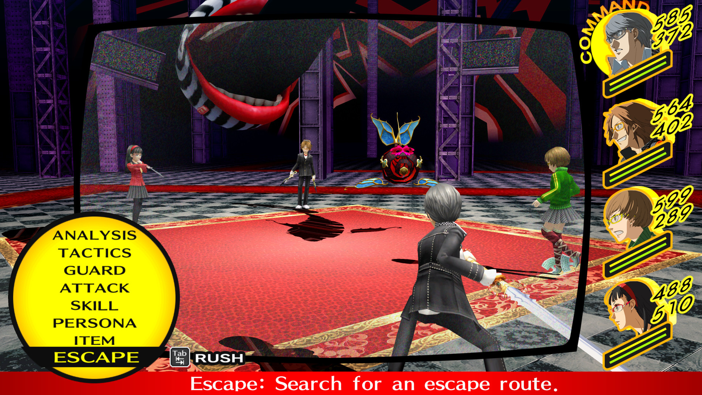

Inaba - A quiet town in rural Japan. A normal teenager arrives at the station to begin his year-long
stay in
the countryside, only to be welcomed by the news of a dead TV announcer. Shortly after, another body
appears, mysteriously hung from the top of a telephone pole. The cause of death is unknown, with no
leads on
the suspect... As the lone incident develops into a series of bizarre crimes and as the peaceful
community
is thrown into turmoil, the urban youth and his classmates wander into a strange, surreal place covered
by a
thick fog.
He discovers that only he and his friends have the power to solve the baffling case, bring those
responsible
to
justice, and restore harmony to his new home.

Battle UI
Plot
The story of Persona 4 follows a young unnamed teenager (retroactively given the name Yu Narukami in
later
adaptations/spinoffs) who recently moved from the city into Inaba. Yu quickly befriends his classmates
Yosuke Hanamura, Chie Satonaka, and Yukiko Amagi. Yu discovers his ability to enter the TV after hearing
about this rumor called the “Midnight Channel”. This leads them to enter the TV and discover the TV
World,
where they meet a strange bear-like creature named Teddie who tells them that the murder victims both
were
trapped in this world before they died. After awakening to a new power called Persona, they form an
Investigation Team to find the link between the TV World and the murders to catch the culprit.
Throughout the game, more people are kidnapped and thrown into the TV World which Yu and his friends
have to
save. They save Yukiko Amagi, Kanji Tatsumi, Rise Kujikawa, and Naoto Shirogane, who after being saved
from
the TV
World and confronting their shadow self awaken to the power of Persona and join the Investigation Team.
While the Investigation Team isn't investigating the TV World, they are normal high school students who
go
to class, go on trips, and hang out at the local supermarket.
Daily
The gameplay is divided into 2 parts, the daily life of Yu (simulation) and exploring the TV World
(RPG).
The daily life is split into 2 parts After School/Daytime and Afternoon. There is also a Morning
category
reserved for when the player is at school. A bulk of the daily activities are available only in the
Daytime.
During the daytime you have a plethora of options to choose from like Social Links. Social Links are
bonds
formed with other characters, they represent a Tarot Arcana and give you extra exp when fusing a Persona
of
that Arcana as you progress the link. They go from levels 1 through 10, and if the Social Link is a
party
member they also grant new abilities for the Persona of that party member to use in battle. During the
Daytime you can also work on increasing your Social Stats, which impact certain dialouge options in the
story or in Social Links. One way to increase Social Stats is by reading a book, fishing, completing
side
quest around town, or working. Working in the game can be done during Daytime or Afternoon, and by
working
it increases one of your Social Stats, gives you money to spend on equipment or items, and depending on
the
job it can increase also count as one of your Social Links and thus increases the level for that Social
Link.
The Afternoon is very similar to Daytime, just more limited. During the Afternoon, most of your Social
Links are unavailable, but there are still some you can increase during this time. Your main options
during
the Afternoon are reading, working, studying, cooking (if given the option), or just going straight to
bed
and starting the next day. Sometimes, during the story of the game, it requires you to go out and
investigate during the Daytime to find information on the person currently trapped in the TV World.
After
you gather enough information you gain access to a new dungeon in the TV World and can progress the
story.
Every action taken during the Daytime or Afternoon takes time, so you have to use your time wisely.
Combat
The second part of the gameplay is the TV World. During the Daytime, you may choose to enter the TV
World
and explore one of the dungeons. New dungeons are added into the TV World as you progress through the
game
and more characters are trapped inside the TV World. The dungeons are mostly randomly generated except
for
special floors which are always the same layout. In the dungeons you encounter Shadows, which are the
main
enemies of the game. Once you encounter a shadow, combat starts, which follows a turn based order. It
sorts
the protagonist, the 3 party members you brought into the dungeon, and the shadow(s) you are fighting
into a
turn order based on their agility stat. If you get a first attack, you and your party members go first.
If
you were ambushed, the shadow(s) get to go first. During your turn, you have a multitude of options to
choose from. You can do a regular attack, use an item, guard, or use a skill from your Persona. Personas
are
the biggest part of combat, granting you skills, different stats, and resistances.
Every Persona and shadow in the game has a setlist of skills they can learn and use, which are divided
into
4 main categories:
Damage, Ailment, Support, and Passive. Damage has it's own subcategories for affinities, these
affinities
are: Physical, Fire, Ice, Electric, Ice, Wind, Light, Darkness, and Almighty. Physical skills cost HP to
use, while all the other abilities are magic skills and cost SP (Skill Points) to use.
Ailment skills
inflict status ailments like: Poison, Rage, Dizzy, Panic, Enveneration, Exhaustion, Mute, and Fear. Some
Damaging skills have a chance to inflict status ailments as a bonus.
Support skills are divided into support
and recovery, for example there are skills that increase your ATK and DEF and skills that recover your
HP.
Passive Skills are skills that act passively without needing to select them in battle, they have a wide
range of effects, from increasing your HP, giving you resistance to an ailment or affinity, or even
reviving
you after you reach 0HP in battle. Only the Protaganist wields the ability to change Personas, which
means
you have to plan what Personas you take into battle in order to cover a wide range of affinities. Every
Persona and Shadow has an affinity chart which tells it how it reacts to being damaged with that
affinity.
These reactions are: Blocks, Reflects, Absorbs, Resist, Weak, or Neutral. Hitting a weakness deals extra
damage and knocks the shadow down, opening it for an All-Out Attack. All-Out Attacks are a special
attack
that can only be used once the enemie or enemies are all downed, taking the ATK power of all the weapons
the
characters are wielding and using it in a massive attack. All-Out Attacks are under the Almighty
affinitiy,
which is always neutral except in rare occasions such as boss fights.
Review
Persona 4 is one of my favorite games of all time. While the gameplay isn't all that complex, it might
not
be the prettiest looking game ever, and the plot isn't the best work of fiction, the game spoke to me on
a
personal level. I felt immersed in the world of the game, I cared about these characters and story the
the
game was trying to tell me. It replicates the feeling of living in a small town with nothing to do
except
spending your time working, reading, or hanging out with your friends. The way these characters act and
change throughout the story and social links is very well written and feels real. Whenever something bad
happens to these characters, it is very easy to empathize and feel for these characters. Besides the
writing, the gameplay is very easy to understand and fun. You don't need to understand every single part
of
the combat system in order to beat the game, the added complexity makes replaying the games on harder
difficulties a blast. The summaries on this webpage barely scratched the surface of what this game
offers,
from it's interesting, comedic story with it's fair share of heart-wrenching moments, to the depths of
the
Persona mechanic, like fusing, getting and using skill cards, leveling up Persona stats, and the
entirety of
the Velvet Room. It's hard to sum up this massive game and how I feel about it with limited space, but,
to
sum it all up, Persona 4 is an incredible game and you should check it out if you like RPGs at all.
Atlus managed to combine the best of what already worked well with fresh new ideas and tweaks, and the
end result is a fantastic role-playing game -- definitely a shoe-in for RPG of the year. Unless you
dislike the genre, do not, under any circumstances, miss Persona 4. - Destructoid